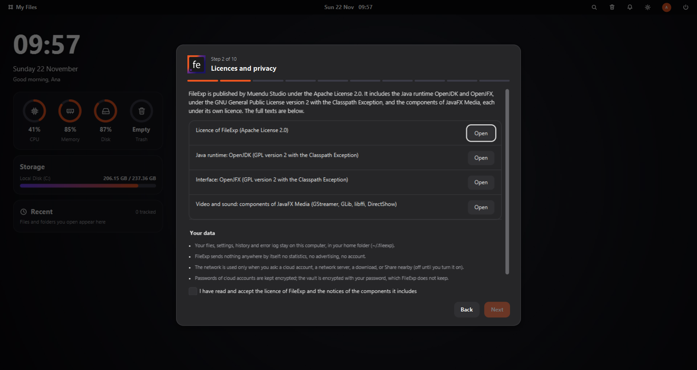
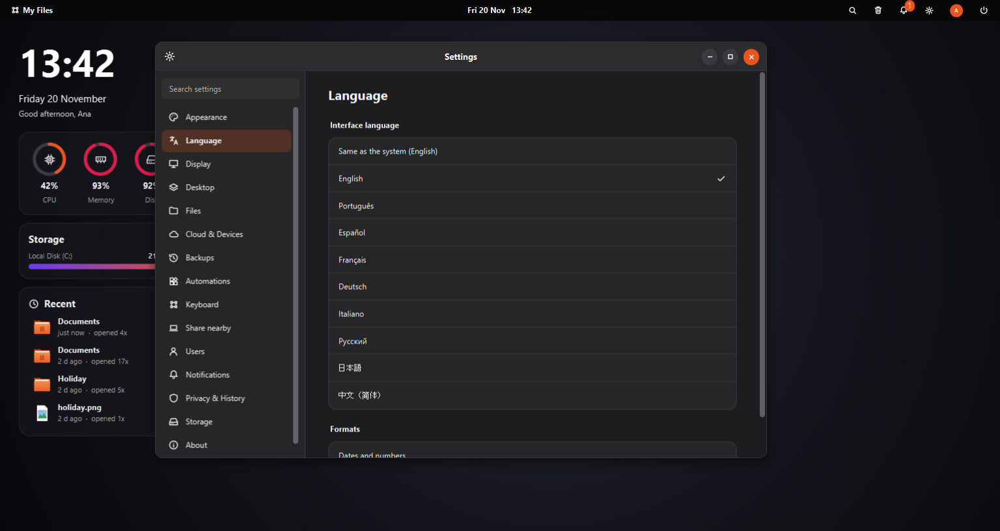

Installing and first run
Windows#
- Run
FileExp-3.11.0.exe. - Choose the folder (the default is fine) and whether you want a shortcut on the desktop. The installer also adds FileExp to the Start menu.
- Open FileExp from the Start menu.
There is also a portable version: the folder FileExp with FileExp.exe inside. Copy the whole folder anywhere (even a USB drive) and run FileExp.exe. It brings its own Java, so nothing else has to be installed.
Linux (Ubuntu, Debian and derivatives)#
bashsudo apt install ./fileexp_3.11.0-1_amd64.deb
FileExp then appears in the applications menu. On Linux the user folders come from ~/.config/user-dirs.dirs, so translated names such as "Transferências" are recognised, and drives mounted in /media, /run/media and /mnt appear in Computer.
Requirements#
| Minimum | |
|---|---|
| System | Windows 10 or 11 (64-bit), or a 64-bit Linux with a graphical desktop |
| Memory | 4 GB of RAM (FileExp itself uses about 200–400 MB) |
| Disk | about 150 MB for the app; your data uses a few MB |
| Java | none — the installer and the portable app include their own runtime |
First run#
- The start screen shows the FileExp icon, the version and the loading state while your preferences open in the background.
- The first time, the setup assistant opens (since 3.11), with 10 steps. It works entirely with the keyboard: Tab moves from one control to the next, the arrow keys choose within a group and Enter goes on.
| Step | What you choose |
|---|---|
| 1. Welcome | The language (one of nine) |
| 2. Licences and privacy | Read and accept the licence of FileExp and the notices of the components it includes (required) |
| 3. About you | Your name and the colour of your picture |
| 4. Appearance | Theme, accent colour, text size, animations |
| 5. Files | Confirmation before the Trash, hidden files, thumbnails, folder sizes, refresh by itself |
| 6. Privacy and history | Record what you open (Most opened, Recent, Timeline), notifications |
| 7. Network | Turn on Share nearby, the name of this computer, accept folder syncs (all off by default) |
| 8. FileExp and your system | .fexp, .fexc and .fexr files open in FileExp with their own icon (on by default); "Open in FileExp" on folders, the fileexp command in a terminal and opening when you sign in (off by default) |
| 9. Coming from another computer? | Import a copy of the settings (.fexp) |
| 10. All set | A summary of your choices |
Set up later closes the assistant with the default values. Everything you choose can be changed in Settings, and the assistant can be opened again in Settings › About › Run the assistant again.
- The desktop appears. Open My Files with the button on the left of the top bar, or with Ctrl+Space. Next time you are welcomed back.

Licences#
Step 2 shows, in full and unchanged, the licence of FileExp (Apache License 2.0), that of the OpenJDK Java runtime and of OpenJFX (GNU GPL version 2 with the Classpath Exception) and the notices of the components of JavaFX Media (GStreamer, GLib, libffi, DirectShow). Without accepting, FileExp does not go on: I do not accept: close FileExp quits the application. The acceptance (version and date) is kept on this computer; if the documents change in a future version, FileExp asks again, with that step only. The same texts are always in Settings › About › Licences and legal notices.
Opening a folder directly#
You can start FileExp in a given folder by passing it on the command line:
bashFileExp.exe "D:\Photos\2026"
Choosing the language#
FileExp follows the language of your system. To change it, open Settings › Language, choose one of the nine languages and press Restart now.

Uninstalling#
- Windows: Settings › Apps › FileExp › Uninstall. Your data in
%USERPROFILE%\.fileexp(and the Trash in%USERPROFILE%\.octopusfile) is kept; delete those folders if you want to remove everything (see Your data and privacy). - Linux:
sudo apt remove fileexp.